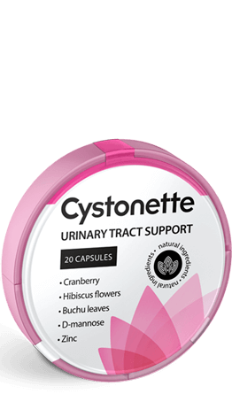

Cystonette
ефективно решение на интимен проблем

 Лекува инфекциозни и възпалителни
процеси
Лекува инфекциозни и възпалителни
процеси
 Ефективен срещу патогенни микроорганизми
Ефективен срещу патогенни микроорганизми Облекчава симптомите на болката
Облекчава симптомите на болката Лекува хроничната форма
Лекува хроничната формаПри откриване на характерните
симптоми
трябва да действате веднага!
Често фалшиво желание за уриниране
Прерязване, болка, парене и сърбеж в областта на уретрата
Болка в долната част на корема или в района на кръста
Примеси от кръв в урината
Неприятна миризма на урината
Висока температура, гадене или повръщане

Темата може да е
интимна, но проблемът е сериозен.
Циститът е възпаление на пикочния мехур, инфекциозно увреждане на
лигавиците. Честото, болезнено уриниране е основният признак. Може да има повишаване на телесната
температура и поява на кръв в урината. Почти всяка жена през живота си се е сблъсквала с този
проблем. По-голямата част от жените.
Атанас Лазаров уролог, трудов стаж 15 години
Защо жените по-често
страдат от цистит?
Характеристики на женската
анатомия: женският уретрален канал е по-къс и по-прав от този на мъжете.
Следователно инфекцията прониква
по-лесно в пикочния мехур
Именно това е най-честата причина
за появата на цистит
НЕ СЕ САМОЛЕКУВАЙТЕ
Това е най-честата причина
за преход на цистита в хронична форма.
С болест, която е била лекувана дълго и неправилно, е много по-трудно да се справим: антибиотиците трябва да се взимат с максимална отговорност, несистемното лечение води до ситуация, в която те спират да действат. Опитайте Cystonette — билковото лекарство, което използвам в практиката си. То е доказало ефективността си при всички случаи на цистит, включително при хроничните случаи. По време на курса на употреба това растително лекарство премахва бактериалната и патогенната флора, нормализира работата на бъбреците и облекчава болката. Освен това лекарството е подходящо за профилактично лечение.
Атанас Лазаров уролог, трудов стаж 15 години
Мнение на пациентите
Християна, на 38 години Страда от цистит повече от година.
За първи път се появи след секс. В началото просто ми беше неприятно, но след това болка беше такава, че
не можех да помръдна. Някак стигнах до аптеката и купих първия антибиотик, който ми попадна. Помогна ми.
След един месец същата история и отново антибиотик. Но на четвъртия път той не ме спаси: лежах няколко
дни с остра болка и гореща бутилка между краката. С виновен поглед отидох на лекар, а той ми изписа
същите антибиотици! Започнах да търся, с какво се лекуват хората, намерих статия за Cystonette, поръчах
си го и го изпих. От година и половина нямам симптомите на тази инфекция. След шест месеца ходих на
преглед при уролог, изследванията бяха перфектни. Слава Богу, че тези мъчения свършиха, върнах се към
нормалния си начин на живот.

Мая, на 64 години Преди месец и половина циститът разруши всичките
ми планове.
Канехме се с дъщеря ми да отидем на почивка и тогава ми се случи тази неприятна изненада – сухота,
дискомфорт и силно парене, особено след ходене до тоалетната. Страдах от това дори повече, отколкото от
горещите вълни, които ме придружават във връзка с менопаузата. Побягнах на лекар, който ми препоръча
една колежка. Според нея, той е излекувал доста хора с подобни симптоми. След резултатите от
изследванията той ми постави като диагноза възпаление на пикочния мехур на фона на менопаузата. Лекарят
ми обясни, че циститът не е нещо необичайно при менопаузата и ми изписа Cystonette. Облекчението дойде
след първата употреба. След курса на лечение изобщо забравих какво е това и се надявам, че повече да не
го преживея.

Ангелина, на 49 години Страдах от хроничен цистит от детски
години.
През годината имах влошаване 3-4 пъти, това е, когато от болка под корема ти се иска да се качиш на
стената, надува се и ходенето до тоалетната е с голяма болка. След поредния преглед лекарят ми откри
везикоуретерален рефлукс – връщане на урина обратно в бъбреците, както ми казаха в клиниката. Тогава
много се уплаших и разстроих. Намерих друг лекар, той ми изписа Cystonette. След седмица всички симптоми
изчезнаха и облекчението, което почувствах, не може да се сравни с нищо! И след курса с Cystonette,
циститът е в миналото.
МОЛЯ, ОБЪРНЕТЕ ВНИМАНИЕ!
Броят на опаковките, необходими за желания резултат, се определят
индивидуално и в отделни случаи могат да бъдат увеличени.
Cystonette
ефективно
решение на интимен проблем
Лекува инфекциозни и възпалителни
процеси
Ефективен срещу патогенни микроорганизмиОблекчава симптомите на болкатаЛекува хроничната форма